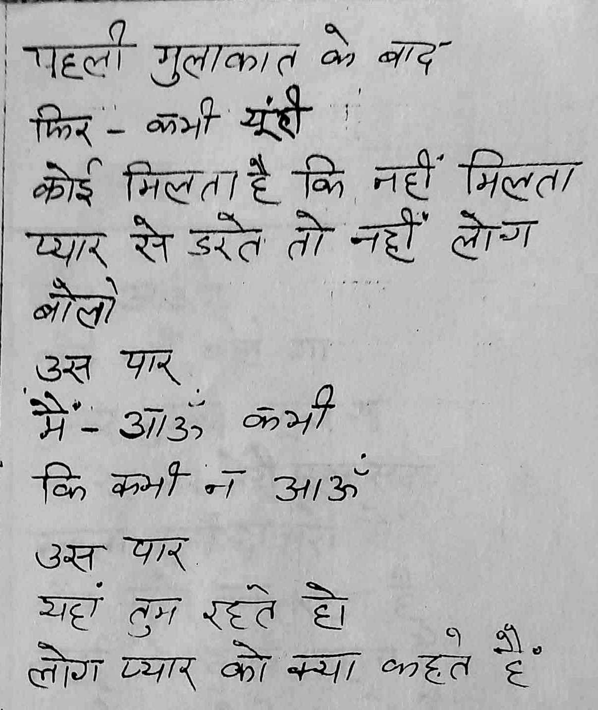
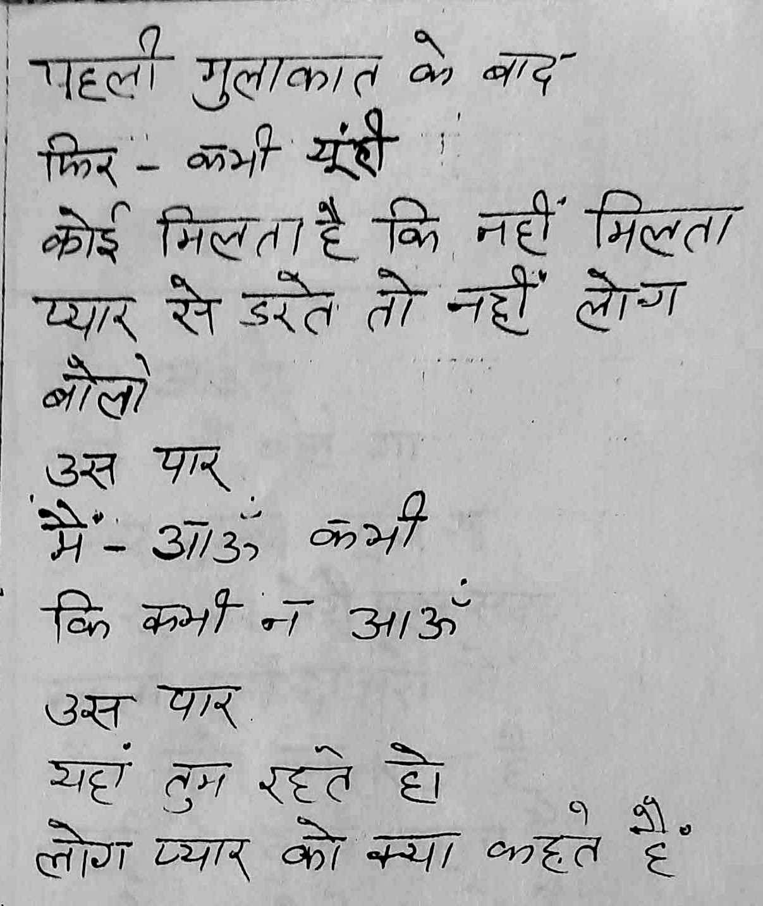
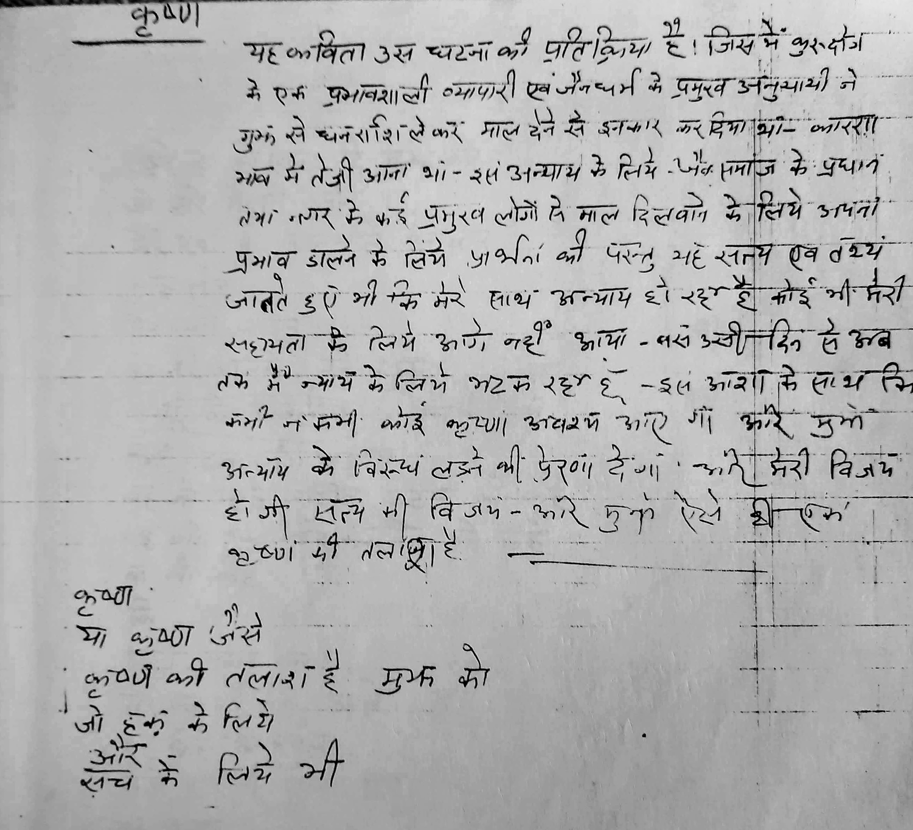
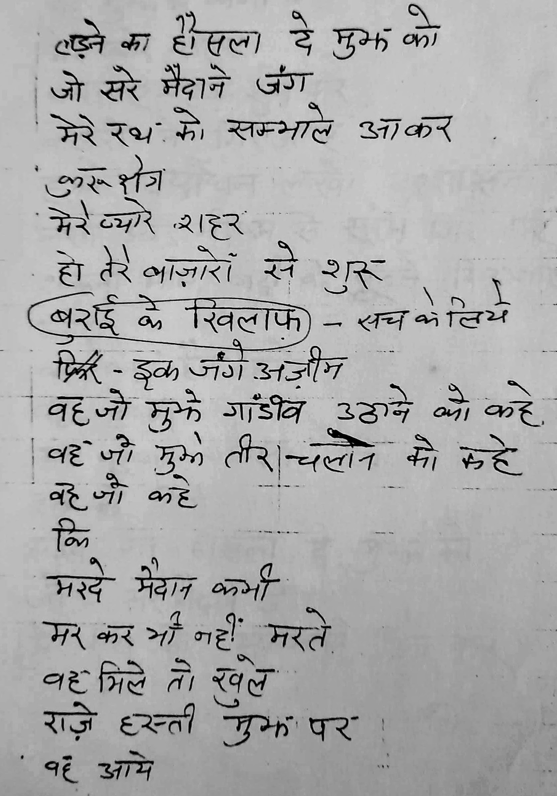
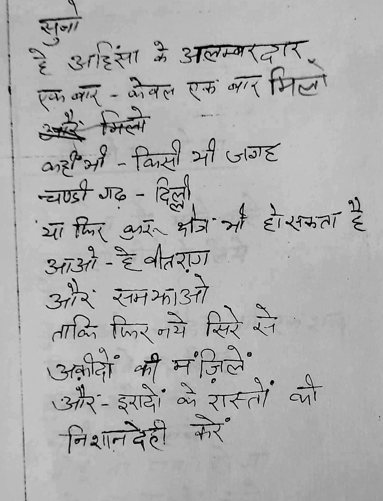
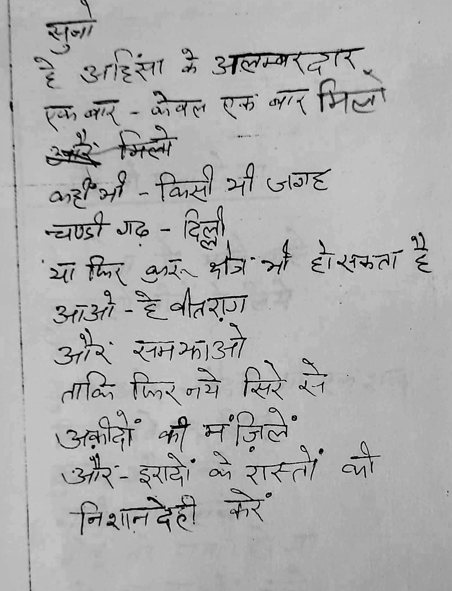

Madan Maholvi
A masters in history and an analyst of religion, he also has huge unpublished work on "Jain Dharma in Haryana"
This online resource is a collection of his unpublished work .. Mostly poems and short stories ..
Rasta Tau Mile
This is a collection of 43 poems written in a specific style of Urdu Poetry called Nazm. A Nazm is a free flowing text that explores one specific feeling or emotion. It can be topical and imbibe certain flow but the writer is free to choose or ignore the rhythm. Nazm represents a freedom from the rule based poetry. The idea is to have the writer as much leeway as she needs to express a thought. That is the reason Nazm was proclaimed to be the voice of progressive Tarakki Yafta poets. It was embraced by likes of Kaifi Azmi in his early days as an expression of the progressive movement.
The book is about self discovery. Poet seeks himself amidst the chaotic eighties of India - a struggle between hope and failures , the growing pains of the society as much as within. Very evident in the title poem ..
In a way the poetical format - Nazm is a very apt choice for the topic at hand "Show me the path" . He is judicious with the words without compromising the freedom of the medium.
Creative commons and open source credits
This work is under creative commons licence. You are free to use , copy , redesign any which you you like as long as you visibly attribute the original as under
Title Rasta Tau Mile by Madan Maholvi (poems.shutri.com)
Licensed under Creative Commons: By Attribution 3.0
http://creativecommons.org/licenses/by/3.0/
- The online presentation of the book is through an "open source" documentation tool "mdbook". You may click on three horizontal bars at the top left corner of the screen to open a side panel to access the poems sorted in a index style.
- The open access project is hosted at Github
Recital
The audio recording and editing is through "open source" applications "Audacity" and "SoX". Audio files are stored at internet archive. The good thing about audio player from archive.org is it allows embedding individual tracks on web pages ; as well as all the sound tracks together kinda like a clickable playlist. Short of a podcast, I guess this is best uninterrupted audio experience ..
I am not a professional sound artist but my attempt is to invoke an eighties style "All India radio Urdu Service" audio experience. A laid back but thoughtful listening experience. I am seeking help from professional sound artists to improve upon these renditions.
Contributions
Please feel free to visit the repository at Github . You may raise issues if you see any technical or literary discrepancies. I am looking for help to translate these poems in other languages - particularly in English. I will provide technical assistance and publishing support . If you have a taste for the poetry and command on other languages , please contact me through email
You may find my rendition lacking in Urdu pronunciation or poetic style of "Nazm" rendiion. If you have a better voice for Urdu (or Hindi), please feel free to record the audio and send me in .mp3 format. I will be happy to add your rendition with due credits.
And most importantly please spread the word for these amazing poems. I truly feel they deserve a wider audience. You can download the audio for a single track or all the files in single shot from internet archive . Downloads are available in zip format or as well as a torrent . If you need files in .wav format , feel free to drop me an email
~Ashutosh~


Jagta Patthar

Rasta


Hum Dono


Us Paar
 

Khushbu


Lunch Time

Bol Kavi


Lekin

Us Ne


 


 

Koi Tau Pata Hoga


Yoon Hi Khada Hoon


Kis Liye


Ek Kabira


वातायन
फिक्र के परिन्दे शीर्षक संग्रह मदन की उर्दू कविताओं का प्रथम संग्रह है। हर्ष का विषय है कि कवि इसे नागरी लिपि में प्रकाशित करवा रहा है। हमें आशा है कि इस से उस के पाठकों के क्षेत्र की व्यापकता में आशानुकूल वृद्धि होगी और विशाल हिन्दी-प्रेमी जन समूह इस का रसास्वादन कर सकेगा ।
संग्रह की अधिकांश कविताओं में कवि मदन जैन समसामयिक समस्याओं तथा ज्वलन्त प्रश्नों से जूझता दिखाई देता । पड़ोसी राज्य में घटित होने वाली दुःखद घटनाओं, बदली हुई अन्तर्राष्ट्रीय परिस्थितियों तथा राजनैतिक और सामाजिक परिवेश - सब का जायजा लेता हुआ दृष्टिगत होता है ।
आज का माहौल इतना भयानक हो गया है मनुष्य अपने साये से भी भयभीत है। संग्रह की कि अनेक कविताओं में संशय, भय, संत्रास-जन्य परिस्थि तियों के कई वास्तविक चित्र उभर कर सामने आते हैं। कवि को शब्द-चित्रों द्वारा अपनी बात कहने मे यथेष्ट सफलता मिली है। उस के कई चित्र हृदय-पटल पर अंकित होकर दीर्घकाल के लिए अपनी छाप छोड़ने में सफल हुए हैं।
एक चित्र देखिए :
माहौल किस क़दर भयानक है।
आदमी मरते हैं।
आदमी चुप हैं
यहाँ तक कि इबादतगाहों में
ख़ुदा की पनाहों में
मौत मुस्कराती है कहकहे लगाती है।
आदमी चुप हैं बेजुबां गोलियाँ चीखती हैं
ये हसीं दुनिया जैसे एक मकतल हो
लगता है जैसे कोई आया है
नहीं यह तो मेरा साया (मेरा साया)
"बँटवारा" शीर्षक रचना इस संग्रह की सर्व श्रेष्ठ रचनाओं में से एक है। बँटवारे की आशंका मात्र से कवि का व्यग्र तथा उद्विग्न हो उठता है । यह विशाल देश सारे का सारा अपना है। खेत खलिहान, शीशम के पेड़, मदमस्त नदियां सरसब्ज जंगल, पहाड़ों की चोटियाँ किस किस चीज का बँटवारा होगा। गांव-गाँव, घर-घर शहर शहर कैसे बॅट सकेंगे ? जमीन, चश्में, गीत-गजलें कैसे बॅट सकेंगी-सब ! और जब वह बूढ़ा बाप जो विश्व भर में अमन और शान्ति का पैग़ाम लेकर गया हुआ है लौटकर आएगा तो क्या देखेगा ? यही न कि हम तुम जुदा हो गए हैं। हम बूढ़े बाप का जिस्म, हड्डियाँ, लहू, आँखें सब बाँट लेंगे ।"
"मगर
प्यार और मुहब्बत का फलसफा
अमन और दोस्ती का रिश्ता
किस तरह बँढेगा !" --"बँटवारा"
संग्रह की अधिकांश रचनाएँ विचारोत्तेजक है। मदन जैन को इस भयानक माहौल में भी मनुष्य की महानता पर गर्व है। अफ्रीका के लोगों के साथ साथ वह भी दस मील लम्बी दौड़, दौड़ रहा है ।
देखिए :
"मैं और
मेरे अन्दर जो एक शायर है।
तेरे साथ साथ भाग रहे हैं।
दस मील लम्बी दौड़ ही नहीं
बल्कि बहुत लम्बी दौड़
कुरुक्षेत्र के मैदाने जंग से
तेरे जलते हुए सहराओं तक
लगातार
शाम-ओ सहर"
(कुरुक्षेत्र के मैदान-ए-जंग से)
मास्को से अमन का संदेश देने वाले विश्व के महान नेता मिखाइल गोर्वाचेव के नाम लिखित कविता की निम्न लिखित पंक्तियाँ विशेष रूप से पठनीय हैं जिनमें कवि ने मनुष्य की महानता को स्वीकार किया है :
तुम इक आदमी हो
और हर आदमी के लिए
जिन्दगी के लिए
उम्मीद के हसीं पलों की तरह हो
बेकरां समन्दर, बेबादबां कश्तियाँ,
आंधियाँ
गिरदाब-ए-बला में
तुम साहिलों की तरह हो
(अज़ीमतर)
कवि देश के कोटि-कोटि, दीन हीन, बेसहारा अर्द्धनग्न लोगों को कभी विस्मृत नहीं कर सका । -
देखिए
मेरे गिरद-ओ-नवाह दूर तक
टूटे फूटे झोंपड़ों का लम्बा सिलसिला है।
उरियाँ नीम-उरियाँ बदन वोसीदा हड्डियाँ
हड्डियों के जिस्म
बेनूर चेहरे
बुझी बुझी सी आँखें
मुफलिसों के जमघट हैं
गोया हसरतों के पनघट हैं
हज़ारों फाकाकश मासूम बच्चे
मेरे आसपास रहते हैं
मुझे अपना समझते हैं
(तू आएगी कैसे)
मदन जैन की भाषा में चित्रात्मकता का बाहुल्य है । कहीं कहीं तो वह कुछ वस्तुओं अथवा प्राकृतिक दृश्यों का नामोल्लेख करके ही एक संश्लिष्ट चित्र निर्मित कर देता है। ऐसा ही एक संश्लिष्ट चित्र देखिए :
रास्ते मोड़
शाम-ओ-सहर
मंजिलें और मुसाफिर
बादे सबा फूल कलियाँ शजर
हसीं शहज़ादियाँ जुल्फे शोख रंग आंचल
मुहब्बत की हर दास्तां
आग की दहकती हुई भट्टियाँ
मजदूर और दहकां
एक इक धमाके से
कौस-ए-कजाह के शोख रंग
और ये सब – सब कुछ
बादलों में घुल जाएंगे ।
(अजीमतर)
मदन जैन जिन्दगी से प्यार करता है, उससे डर नहीं भागता । वह प्यार की एक रात को एक सदी के जीवन से अधिक मूल्यवान समझता है। "रत जगों का मौसम" शीर्षक कविता इस संग्रह की एक सशक्त रचना है। इस की निम्न पंक्तियाँ द्रष्टव्य हैं:
रात
इस युग की आखरी हो रात
और शायद
अपनी मुलाकात भी दोस्त !
इस रचना की चित्रात्मकता भी देखने योग्य है।
मन्दिर का हर एक मीनारा
चाँदनी रातें
बेल, बूटे, पहाड़
खुदानुमा पत्थर
जवां दिलकश बहार
सब पुकारें
आने वाले कल से कोई रिश्ता न हो
इस रात का
'ख्वाब' 'शहर' 'बागी था महावीर' और "क्या नाम दू" - इस संग्रह की कुछ अन्य सशक्त रचनाएँ हैं ।
मदन जैन कला-शिक्षक तथा कला प्रेमी है; अतः उस की रचनाओं का कलात्मक होना स्वाभाविक है। वह जानता है कि अपनी बात कहाँ समाप्त करनी है और उसके बाद वह एक शब्द भी जोड़ना उचित नहीं समझता । अतुकान्त कविता पर कवि का पूरा अधिकार है। कविताओं में प्रवाह के साथ साथ एक आन्तरिक लय विद्यमान रहती है। हमें पूर्ण आशा है कि जैन की कला पर दिन प्रतिदिन और निखार आता जाएगा ।
अन्त में हम इस संग्रह के प्रकाशन पर कवि को हार्दिक बधाई देते हैं तथा उसे विश्वास दिलाते हैं कि उर्दू तथा हिन्दी दोनों भाषाओं के पाठक इस का समान रूप से स्वागत करेंगे । मदन जैन हरियाणा की जदीद उर्दू शायरी में जल्द ही अपना स्थान बना सकेगा और उस की रचनाओं को स्थायित्व प्राप्त हो सकेगा - इस के साथ ही हम इस वक्तव्य को समाप्त करते हैं ।
ज्योतिनगर,
कुरुक्षेत्र,
बुद्ध पूर्णिमा ( सम्बत् २०४६ )
खुशीराम वाशिष्ठ (राज्य कवि हरियाणा)
दृष्टिकोण
मदन जैन का काव्य संग्रह "फिक्र के परिन्दे” पढ़ा। जगह जगह जिंदगी की सच्चाइयों, सुख-दुःख, कलह, उग्रवाद, मानवीय मूल्यों का बिखराव तथा वर्तमान की भयानक चुनौतियों के सजीव चित्र घंटों अपनी ओर देखने को मज़बूर करते हैं । सिद्धहस्त चित्रकार के सजीव रंग तथा कवि की कोमल अनुभूतियों का अनूठा सम्मिश्रण दिल की गहराइयों में अनायास ही उतरता चला जाता है
कहकशां, नाजुक तितलियां
शबनम और सफेद मोती
फूल और खुशबू
या -सरे मिज़गां ठहरा हुआ आँसू
चुप हैं अजंता की बोलती तस्वीरें
शायद यहां जिंदगी लिबास बदलती है।
मंजिलें बहुत करीब हैं शायद
(अल्फ नंगी)
एक और चित्र :
शोर - बूटों के खड़ाके
सोचो साल माह और दिन
जो कयामत के दिन हैं
जिस दिन रूहें कब्रों से निकलेंगी
शायर और ताजर रूहें
बेबस और जाबर रूहें
( फना की तारीख)
काव्य और चित्रकला की सुकुमारता के अतिरिक्त कवि जगह जगह वर्तमान से भी साक्षात्कार करता हुआ दिखाई देता है :
कुछ समझ नहीं आता
कहां से आ गए
लहू रंग बादलों के हुजूम
(लहू रंग बादलों के हुजूम)
दूर दूर तक ताहद्दे नजर
सुर्ख सुर्ख है जमीन का जिस्म
लगता है ख्यालात भी जल जाएंगे
(ख्यालात भी जल जाएंगे)
हिन्दु का जिस्म – सिख का जिस्म
मुस्लमान का जिस्म
एक जिस्म-आदमी का
कटे हुए दरख्त की तरह गिरता है।
मरने वाला कौन है ?
हर कोई पूछता है
मगर- –मुझे लगता है कि—में हूँ ।
(मैं हूँ )
इतिहास के विद्यार्थी श्री जैन ने अपनी कविता का तानाबाना अक्सर धार्मिक एवं ऐतिहासिक वीर पुरुषों के संदर्भों से बुना है । कवि पाठकों को अनेक नगरों, युद्ध स्थलों तथा ऋषि मुनियों के दर्शन करवाता है जैसे महाभारत, कलिंग, सायबेरिया |
सिकन्दर और पोरस का युद्ध, राम और कृष्ण, महावीर, बुद्ध, ईसा, नानक, बाबरो अकबर, नादरो अबदाली, गोर्वाचोव इत्यादि । इतिहास, दर्शन एवं धर्म का काव्यमय चित्रण सचमुच कवि के विस्तृत ज्ञान का परिचायक है, सभी कविताओं में भाव, भाषा, प्रवाह, शैली एवं शब्दचयन का अनूठा सामञ्जस्य दृष्टिगोचर होता है ! प्रत्येक कविता एक बात कहती है; एक नई बात जो सुन्दर भी है और प्यारी भी ! जिस में चिंता और चिंतन के पक्षी असीम ऊँचाइयों तक उड़ानें भरते हुए चाँद, सूरज, कहकशां बिजलियां और एटमी धूल से साक्षात्कार करते हैं और जमीन पर रेत, मिट्टी, फूल-कलियां, शीशम और बटवृक्षों की मीठी शीतल छाया से होकर गुजरते हैं । इन के साथ साथ उड़ता है है सच्चा जागरूक कवि । कवि के साथ उड़ानें भर कर मुझे भी हार्दिक आनन्द मिला है इसके लिए चाहे श्रम भी करना पड़ा है, मुझको ! उड़ानें वास्तव में बहुत ऊँची हैं।
जैन के शब्दों में
आसां नहीं जो पहुँचे तुझ तक कोई 'मदन'
तेरे ख्याल आजकल उकाबों से हो गए ।
मेरे दृष्टिकोण से "फिक्र के परिन्दे" उच्चकोटि का काव्यसंग्रह है जिस के लिए श्री मदन जैन बधाई के पात्र हैं। समस्त साहित्य जगत् इस का स्वागत करेगा । ऐसा मेरा विश्वास है ।
कृष्ण भवन
231/3 सब्जीमंडी-कुरुक्षेत्र
कृष्ण चन्द्र पागल
यात्रा
सातवीं कक्षा को बात है, पहली कहानी लिखी। कहानी सम्भवतः निम्नस्तरीय रही होगी जिस के लिये उत्साह एवं प्रेरणा जैसा कोई शब्द याद नहीं आता, परन्तु मां सरस्वती के चरण कमलों में यह मेरा प्रथम नमन था। यहीं से एक सिलसिला चला साहित्य सेवा का । नवम् कक्षा तक आते आते बहुत बड़े विद्यालय के छात्र सचिव का कार्यभार सँभालने का अवसर प्राप्त हुआ। मंच पर आते ही छात्र, अध्यापक, नगर एवं घर के सभी लोग “मदन फ़रियादि " के नाम को जानने एवं प्यार करने लगे ।
सन् 1951-52 के आसपास पंजाब में साहित्य सभाओं के गठन का एक दौर सा चला। नगर नगर में साहित्य सभाओं का गठन हुआ ! मेरे अग्रज श्री अमृत लाल जैन (आजकल एस. डी. एम. नूरपुर) की अभिरुचि भी लेखन में होने के कारण हमारे नगर (अहमदगढ़) में साहित्य सभा के गठन का गौरव मेरे निवास स्थान को प्राप्त हुआ—इस दैवयोग के बाद उच्च कोटि के कथाकारों तथा कवियों का सम्पर्क प्राप्त होने लगा, मासिक गोष्ठियों और कवि-दरबारों से शौक-ओ-जौक में खूब रंग आने लगा ।
मैट्रिक पास करते ही उच्च शिक्षा प्राप्त करने के लिये सन् 1954 में गव० कालेज मालेरकोटला में प्रवेश लिया। पढ़ाई की अपेक्षा नगर में होने वाले "कुल हिन्द मुशायरों" में अधिक रुचि लेने लगे । शायरी के अदबो आदाब से जानकारी बढ़ने लगी ।
चन्द मुशायरों में पढ़ने का अवसर भी प्राप्त हुआ तथा पंजाब के जानेमाने कवि जनाव नानक चन्द नाज़, अस्तर रिज़वानी, प्रेम वारबर्टनी तथा दर्द नकोदरी साहिब से हल्की सी मुलाकात भी हुई, मगर यह सिलसिला देर तक न चल सका । अचानक फाईन आर्ट की शिक्षा प्राप्त करने का जबर्दस्त दौरा पड़ा और कालेज की पढ़ाई छोड़ कर गवरनमेंट स्कूल आफ आर्ट पंजाब, शिमला में प्रवेश ले लिया। जीवन की प्रत्येक गतिविधि कला और साहित्य को समर्पित कर दी गई ।
फिर उस समय जब, कला की शिक्षा प्राप्त कर शिमला की पहाड़ियों से मैदानों में उतरे तो लगा मानो युद्ध क्षेत्र में उतर आये हों । मध्यवर्ग की सभी विकट समस्याओं ने बाहें फैला कर स्वागत किया । नौकरी की तलाश, दफ्तरों के चक्कर, आर्थिक अभाव, कुण्ठाएँ , भ्रष्टाचार से साक्षात्कार, कोमल अनुभूतियों तथा आकांक्षाओं ने चैन से बैठने नहीं दिया, आखिर बैठते भी तो कहां ?
साये कहां थे राह में जो बैठते "मदन' "
हम ने किये सफर बहुत सख्तियों के साथ ॥
कुरुक्षेत्र में कई वर्षों से गुमनामी की जिन्दगी गुज़ार रहा था कि "आकार" नामी एक स्थानीय संस्था ने मेरी एक कहानी "हडिड्यों का व्योपारी" को पुरस्कृत किया (1985) , इस के साथ ही एक कविता "ख्यालात भी जल जाएंगे" ,"मदन लाल जैन" के नाम से "सशत " हिन्दी मासिक (1986) में छपी ! बस इस के साथ ही कुरुक्षेत्र के साहित्य प्रेमियों की नज़र मुझ पर पड़ी। आदरणीय "दोस्त भारद्वाज साहिब" की कृपा से अदबी संगम कुरुक्षेत्र से जुड़ गया और आज तक जुड़ा हुआ हूँ ।
आभार
फिक्र के परिन्दों को काव्य संग्रह तक की यात्रा पूर्ण करने के लिए जिन प्रियजनों के आशीर्वाद की मीठी घनी छाया मिली उन में हैं श्री खुशी राम जी वाशिष्ठ राज्यकवि हरियाणा, राज्यकवि प्रो० उदय भानु हंस, जनाब साबिर अबोहरी, प्रो० राना गन्नोरी, श्री बाल कृष्ण बेताब, श्री कृष्ण चन्द्र पागल, प्रो० हिम्मत सिंह जैन, श्री दोस्त भारद्वाज, श्री शेखर जैन, श्री जिनेन्द्र कुमार जैन, श्री जगदीश चन्द्र शास्त्री, उर्दू मरकज तथा अदबी संगम कुरुक्षेत्र के सभी मित्र । स्नेह एंव सहायता के लिए "फिक्र के परिन्दे" इन के साथ प्रिय आशुतोष और गुड ओ-मेन् प्रिन्टर्स, कुरुक्षेत्र के भी हार्दिक आभारी हैं ।
और मैं 'मदन जैन' उन अनन्त ख्यालों, घटनाओं, खामोश आंखों, शहरों, जंग के बादलों, परिन्दों, पराग और फूलों के अतिरिक्त सभी ईमानदार संघर्षों का आभारी हूँ जो मुझे कविता बुनने की प्रेरणा देते हैं ।
जैन भवन
विष्णु कालोनी
कुरुक्षेत्र
मदन जैन
ख्याल की कोंपल
कोई आफताब¹ चमके
न--कोई माहताब² जागे
मगर इतना तो हो
ऐ खुदा
फूटे किसी ख्याल की कोंपल
किसी महक का जन्म हो
वीरान सालों की मौत से पहले
जिन्दगी की नमनाक³ आंख में
मेरे खाब का नक्श-ए-पा⁴
ऐ खुदा,
न रास्ता बने न राहनुमा⁵
मगर कुछ देर देरपा⁶ तो हो
हमराह किसी राहगीर के
कुछ दूर तो चले-पल दो पल
फूटे किसी ख्याल की कोंपल
किसी महक का जन्म हो ।
मेरा साया
दौड़ कर चलो
दरवाजे बन्द कर लो
डी-सी-एम के मोटे
गहरे रंगों वाले पर्दे
खिड़कियों पर गिरा दो
चिटखनी चढ़ा दो
दौड़ कर चलो
क्योंकि बाहर आम रास्तों पर
कुछ लोग
बन्दूकें लिए घूमते हैं।
गोलियां चलाते हैं
कहकहे लगाते हैं
आदमी चुप हैं
माहौल इस कदर भयानक है
आदमी मरते हैं
आदमी चुप हैं
यहां तक कि
इबादतगाहों १
खुदा की पनाहों २ में
मौत मुस्कराती है
कहक़हे लगाती है
आदमी चुप हैं
बेजुबां गोलियां चीखती हैं
ये हसीं दुनिया जैसे एक मक़तल ३ हो
दौड़ कर चलो
दरवाजे बन्द कर लो
लगता है जैसे कोई आया है नहीं
------ये तो मेरा साया है
भयानक है बहुत वक्त की तस्वीर मदन ।
आँख नहीं मिलती जलते हुए मंजर ४ से ॥
१ - मंदिर ; २ - शरण ; ३ - क़त्ल करने का स्थान ;
४ - दृश्य
Mera Saya
Daud kar chalo
Daravāje banda kar lo
D C M ke moṭe
Gahare rangoan vāle parde
Khiḍakiyoan par girā do
Chiṭakhanī chaḍhaā do
Dauḍ kar chalo
Kyoanki bāhar ām rāstoan par
Kuchh log
Bandūkean lie ghūmate haian
Goliyāan chalāte haian
Kahakahe lagāte haian
Ādamī chup haian
Māhaul is kadar bhayānak hai
Ādamī marate haian
Ādamī chup haian
Yahāan tak ki
Ibādatagāhoan 1 mean
Khudā kī panāhoan 2 mean
Maut muskarātī hai
Kahakahe lagātī hai
Ādamī chup haian
Bejubāan goliyāan chīkhatī haian
Ye hasīan duniyā jaise ek maktal 3 ho
Dauḍ kar chalo
Daravāje banda kar lo
Lagatā hai jaise koī āyā hai nahīan
------ye to merā sāyā hai
Bhayānak hai bahut vakta kī tasvīr madan ।
Āankhe nahīan milatī jalate hue manjar 4 se ॥
1- Mandir ; 2 - Sharan ; 3 - Katl Karne Ka Sthaan ;
4 - Drishya